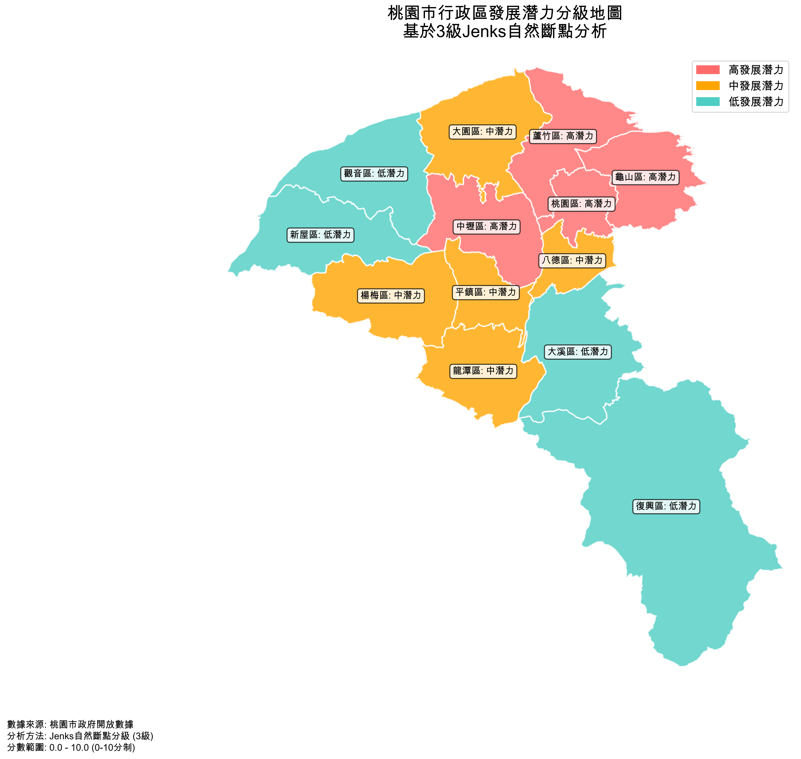

🗺️ 桃園市行政區發展潛力分級地圖
基於3級Jenks自然斷點的13個行政區發展潛力地理可視化
📊 返回儀表板
🌐 互動式地圖
🎨 發展潛力等級圖例
高發展潛力
- 核心都會區，發展條件優越
中發展潛力
- 發展中區域，具成長潛力
低發展潛力
- 需要政策扶持的區域
📈 分級統計摘要
54.456
F統計量
0.916
效應大小
13
總行政區數
0-10
分數範圍
🗺️ 靜態分級地圖

點擊上方"互動式地圖"按鈕查看可互動的地圖版本
📋 各等級區域詳情
4
高潛力區域
蘆竹區、龜山區、中壢區、桃園區
5
中潛力區域
龍潭區、大園區、楊梅區、平鎮區、八德區
4
低潛力區域
復興區、觀音區、新屋區、大溪區
🔬 分析方法說明
Jenks自然斷點分級法
是一種統計分類方法，旨在找到數據中的自然分組點，使得：
✅
組間差異最大化
- 不同等級間差距明顯
✅
組內差異最小化
- 同等級內相似性高
✅
統計學上穩健
- F統計量：54.456，效應大小：0.916
✅
政策解釋性強
- 適合制定針對性政策